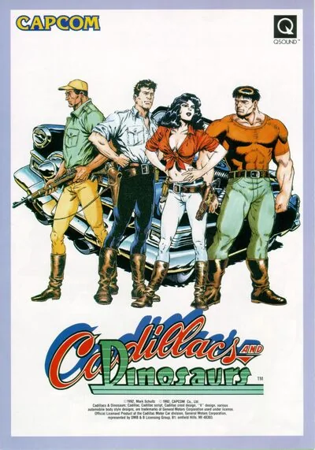
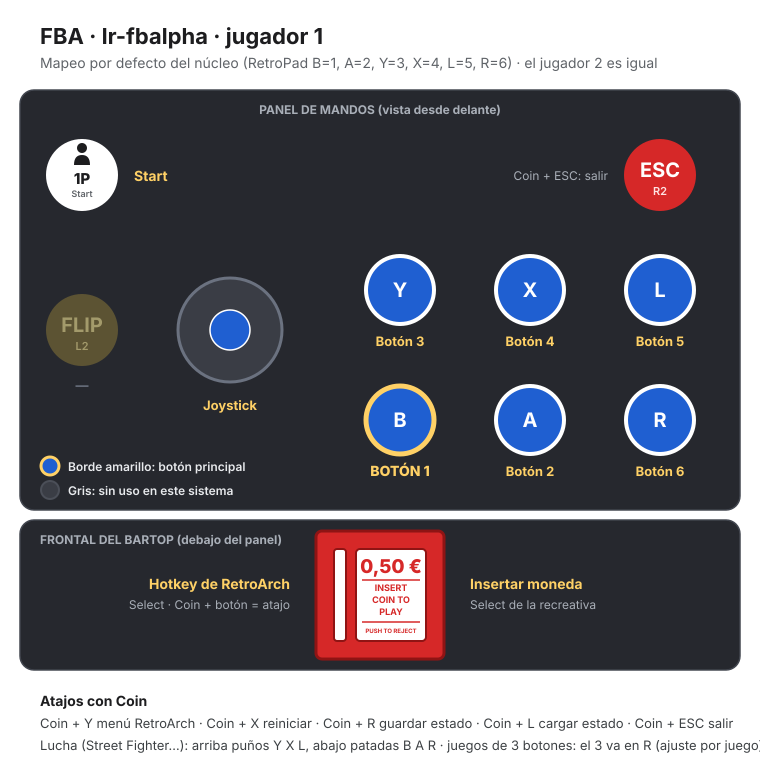

FBA (FinalBurn Alpha)
Cadillacs and Dinosaurs
- Año: 1993
- Desarrollador: Capcom
- Género: Lucha / 2.5D
- Jugadores: 3 jugadores
La historia de Cadillacs and Dinosaurs se inicia con un planeta Tierra fuertemente contaminado y sufriendo una serie de graves desastres naturales que han destruido ciudades y matado a millones de personas. Con el fin de sobrevivir, todos los seres humanos a lo largo del planeta construyen ciudades subterráneas y pronto toda la humanidad se encuentra viviendo en el subsuelo.
Pasan 600 años desde que los humanos construyeron sus ciudades subterráneas y deciden regresar a la superficie. Lo que se encuentran son... ¡dinosaurios! Estas especies extintas han regresado junto con otros monstruos y circulan libremente por la Tierra. Pero esto no desanima a los humanos, que pronto volverán a la superficie.
Los dinosaurios parecen tranquilos y la convivencia con los seres humanos va bastante bien. Pero hay un grupo de humanos llamados "Mercaderes Oscuros"que cazan y matan a los dinosaurios para conseguir dinero. Los dinosaurios se están enfureciendo y han empezado a atacar a todo aquél al que ven ¿Qué está causando esto?
Por lo tanto, Jack Tenrec, Hannah Dundee, Mustapha Cairo y O'Bradovich Mess, dispuestos a atrapar a los "Mercaderes Oscuros" y destruir su banda y a su misterioso líder, Fessenden.1
CONTROLES
En este juego se utiliza un joystick de 8 direcciones y dos botones (ataque y salto). Con estos controles se pueden conseguir bastantes ataques especiales que se ejecutan de igual forma con todos los personajes, aunque su efectividad cambia.
- Ataque 360º. Pulsar ataque y salto al mismo tiempo. El personaje hace un ataque de 360º consiguiendo invulnerabilidad durante unos instantes y golpeando a todos los enemigos cercanos. Como contrapartida la vida del personaje disminuye levemente. - Embestida. Pulsando adelante dos veces (manteniendo la segunda vez) y luego ataque, el personaje puede embestir a uno o varios enemigos. La embestida de Mustapha es particularmente efectiva. - Ataque elevado. Pulsar abajo, luego arriba y luego ataque. El personaje realizará un ataque que golpeará varias veces pero te deja vulnerable frente a los enemigos. A diferencia de la mayoría de beat'em ups de Capcom, no se puede realizar este ataque durante un combo, pero sí mientras se sujeta a un enemigo.
Controles
Dos botones.
| Panel | Juego |
|---|---|
 | Atacar · con arma, disparar · recoger objetos |
 | Saltar |
| + | Saltar girando |
  | Empezar |
 | Meter una moneda |
+  | Salir del juego |
El panel en FBA (FinalBurn Alpha)


Argumento
Recopilado de internet (2026-11-02).
Siglo XXVI. Una banda llamada los Black Marketeers se dedica a cazar dinosaurios con un fin desconocido. La caza continua los ha vuelto violentos y atacan pueblos y personas.
Cuatro héroes se unen contra ellos: Jack Tenrec, mecánico y chamán; Hannah Dundee, diplomática y exploradora; Mustapha Cairo, ingeniero y amigo de Jack, y el misterioso Mess O'Bradovich. Siguiendo las pistas pasan por la «Ciudad en el Mar», el bosque pantanoso, el desierto y el taller de Jack, enfrentándose a Vice, Butcher, Hogg, Slice y Morgan, que se convierte en una criatura parecida a un dinosaurio.
Final: todo lleva al doctor Simon Fessenden, que quiere crear nuevas formas de vida. En su laboratorio subterráneo se transforma en una criatura de tres cabezas, pero los héroes lo derrotan.
Fuentes
Jugabilidad
Recopilado de internet (2026-11-02). Lo marcado con ⚠️ no está probado en la bartop.
- Tipo de juego: beat 'em up de Capcom (1993). Hasta tres jugadores a la vez.
- Personajes: Jack (equilibrado), Hannah (técnica), Mustapha (rápido) y Mess (fuerza).
- Dinosaurios: van por libre y atacan tanto a los jugadores como a los enemigos.
- Ataques: cada personaje tiene dos especiales, uno de ellos gasta vida al tocar a un enemigo. Si juegan dos o más, pueden hacer un ataque en equipo.
- Armas: armas de fuego, objetos para lanzar (piedras, explosivos) y armas cuerpo a cuerpo como garrotes.
- Continuar: al perder, un villano te apunta a la cara con una pistola; si no continúas en 20 segundos, dispara y se acaba la partida.
- Estructura: 8 fases.
Fuentes
Guía de niveles
Recopilado de internet (2026-11-02).
Son 8 fases. Entre los jefes están Vice Terhune, Butcher, Hogg, Slice, Morgan (que se convierte en Morgue), Tyrog y, al final, el doctor Fessenden.
- ⚠️ No he encontrado un longplay con todas las fases marcadas: el de «Vídeos» es la mejor referencia.
Fuentes
Objetos
Recopilado de internet (2026-11-02). Lo marcado con ⚠️ no está probado en la bartop.
| Objeto | Qué hace |
|---|---|
| Armas de fuego | Disparar (munición limitada). |
| Piedras y explosivos | Lanzarlos a los enemigos. |
| Garrotes y armas cuerpo a cuerpo | Más daño de cerca. |
Fuentes
Trucos y secretos
Recopilado de internet (2026-11-02). Lo marcado con ⚠️ no está probado en la bartop.
Secretos
- Ataque en equipo: con dos o más jugadores se puede hacer un ataque combinado.
Fuentes
Longplay

Partida completa de la recreativa (54 min), de AL82 Retrogaming Longplays: Cadillacs and Dinosaurs Longplay (Arcade) [4K].